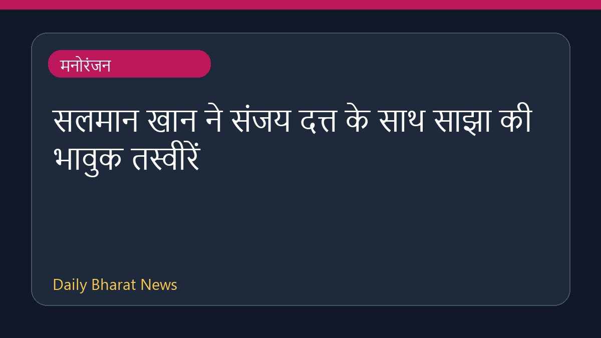

सलमान खान ने संजय दत्त के साथ साझा की भावुक तस्वीरें

अभिनेता सलमान खान ने संजय दत्त के साथ अपनी एक पुरानी और गहरी दोस्ती का जश्न मनाते हुए कुछ तस्वीरें सोशल मीडिया पर साझा की हैं। इन तस्वीरों में दोनों कलाकार गर्मजोशी से गले मिलते नजर आ रहे हैं। सलमान खान ने अपने बड़े भाई जैसे संजय दत्त के लिए एक खास संदेश भी लिखा है, जिसे इंटरनेट पर काफी पसंद किया जा रहा है। इस दिल को छू लेने वाले पोस्ट ने उनके प्रशंसकों को भी काफी आकर्षित किया है और दोनों की पुरानी बॉन्डिंग की चर्चा फिर से शुरू हो गई है।
मूल स्रोत: Entertainment Sources
Salman Khan shares photos of his emotional reunion with Sanjay Dutt: 'I love you Baba' - The Times of India ↗
Salman Khan shares photos of his emotional reunion with Sanjay Dutt: 'I love you Baba' - The Times of India ↗